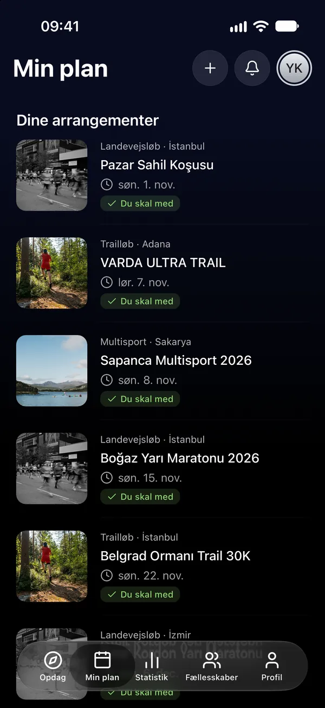
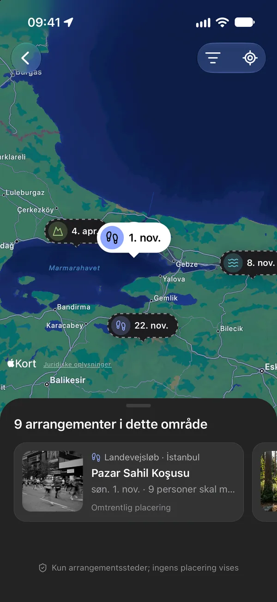
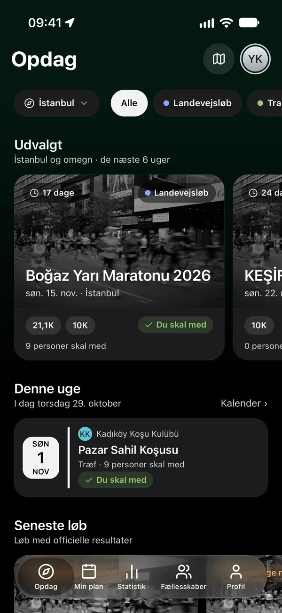
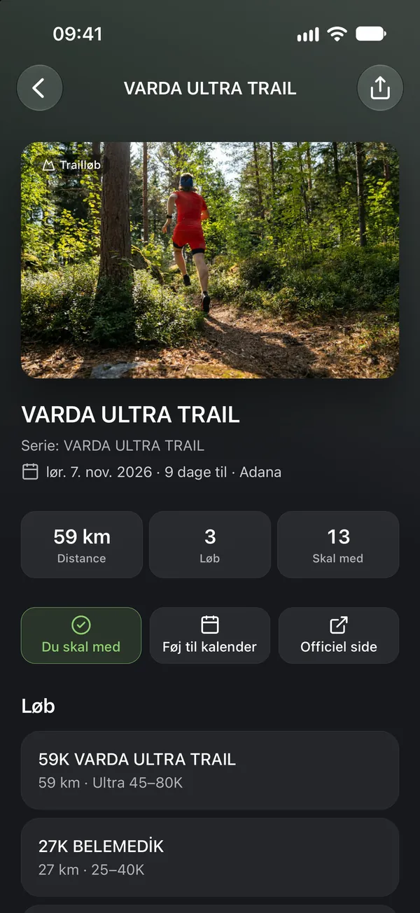
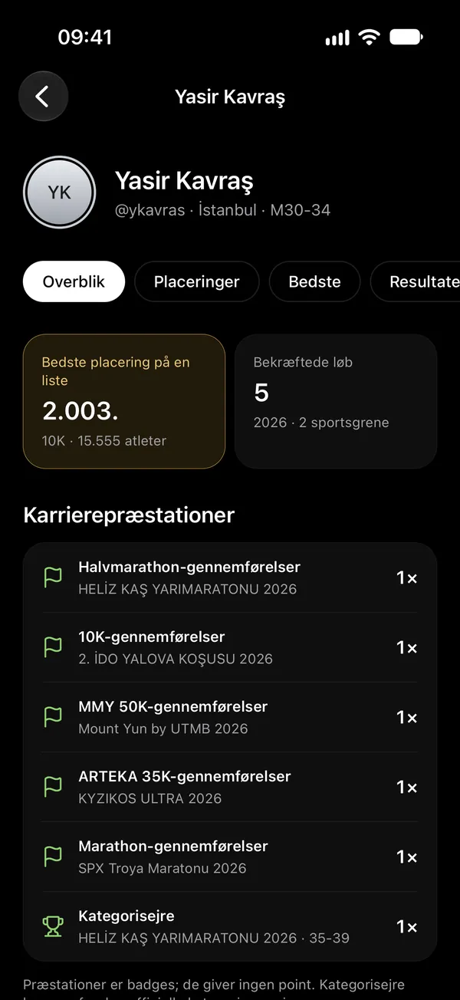
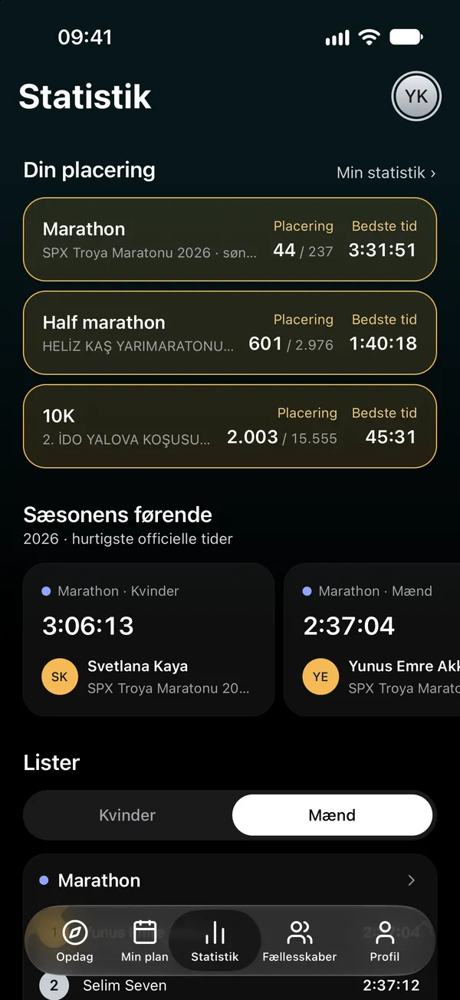
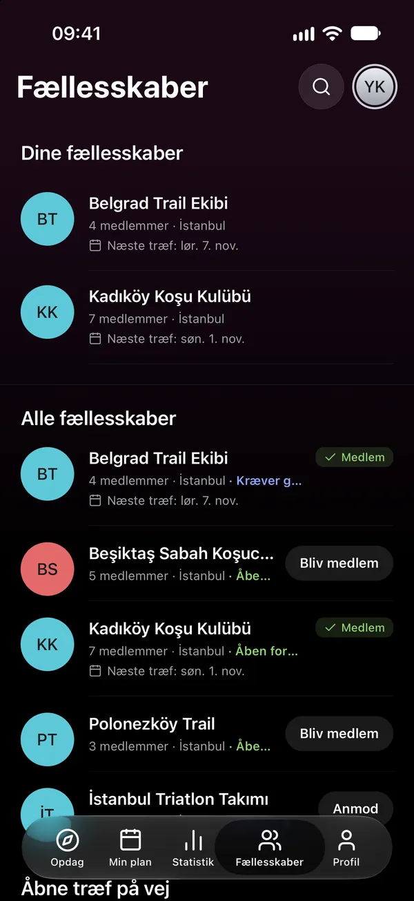

06Kalender
I din kalender, altid opdateret.
Føj et arrangement til din kalender med ét tryk, eller knyt din plan til telefonens kalender som et liveabonnement; når en dato ændres, følger kalenderen med.

01Opdag
Se løb og klubtræf efter by og sportsgren, og få overblik over dem alle på arrangementskortet.


02Min plan
Sig »Jeg skal med«, så kommer arrangementet i din plan. Se, hvor de, du følger, skal hen, og bestem selv, hvem der ser din plan.
Hvem ser din plan?

03Karriere
Resultaterne kommer fra arrangørens officielle liste. Vælg dit løb, find dit resultat, og sig »Det er mig«; når det er godkendt, kommer det på din karriere og dine personlige rekorder.

04Statistik
Listerne fyldes med officielle resultater fra tidtagere, der tillader rangering. Se sæsonens førende i din sportsgren og dit format, og hvor du selv står.

05Fællesskaber
Find din klub, og meld dig ind; se dens træf i Min plan, og gå aldrig glip af et opslag. Åbne træf kan du deltage i uden at være medlem.

06Kalender
Føj et arrangement til din kalender med ét tryk, eller knyt din plan til telefonens kalender som et liveabonnement; når en dato ændres, følger kalenderen med.

07Følg og få notifikationer
Følg løbere og klubber. Få besked, når et løb i din plan ændres, dit resultat bliver godkendt, eller din klub lægger et opslag op.